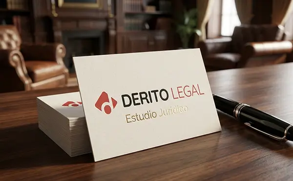

← Todos los proyectos
Identidad · Sitio institucional
Derito Legal
Una identidad profesional que organiza la información y transmite solidez sin recurrir a códigos rígidos.

- Áreas
- Identidad, diseño web, aplicaciones
- Sector
- Servicios jurídicos
- Enfoque
- Confianza y navegación clara
La idea
Rigor con lenguaje contemporáneo
El sistema combina una marca geométrica, una paleta sobria y acentos definidos para construir autoridad con cercanía. La estructura digital prioriza lectura, orientación y acceso a cada área de práctica.
La identidad se extiende de forma consistente desde la pantalla hasta la papelería y el espacio.

Siguiente caso